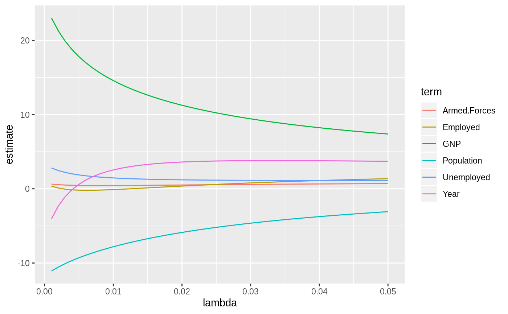
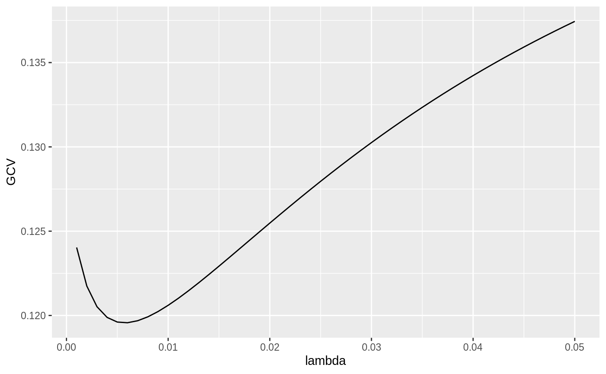
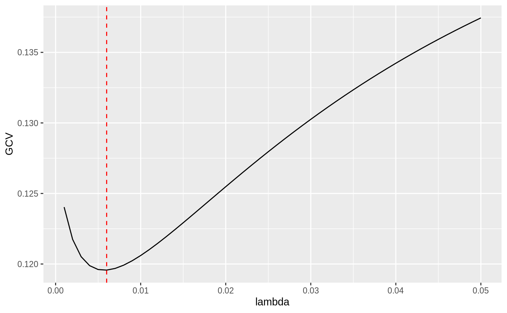

Tidy summarizes information about the components of a model. A model component might be a single term in a regression, a single hypothesis, a cluster, or a class. Exactly what tidy considers to be a model component varies cross models but is usually self-evident. If a model has several distinct types of components, you will need to specify which components to return.
# S3 method for ridgelm tidy(x, ...)
| x | A |
|---|---|
| ... | Additional arguments. Not used. Needed to match generic
signature only. Cautionary note: Misspelled arguments will be
absorbed in |
A tibble::tibble with one row for each combination of lambda and a term in the formula, with columns:
choice of lambda
generalized cross validation value for this lambda
the term in the ridge regression model being estimated
estimate of scaled coefficient using this lambda
Scaling factor of estimated coefficient
Other ridgelm tidiers: glance.ridgelm
#> # A tibble: 6 x 5 #> lambda term estimate scale xm #> <dbl> <chr> <dbl> <dbl> <dbl> #> 1 0 GNP 25.4 96.2 388. #> 2 0 Unemployed 3.30 90.5 319. #> 3 0 Armed.Forces 0.752 67.4 261. #> 4 0 Population -11.7 6.74 117. #> 5 0 Year -6.54 4.61 1954. #> 6 0 Employed 0.786 3.40 65.3fit2 <- MASS::lm.ridge(y ~ ., longley, lambda = seq(0.001, .05, .001)) td2 <- tidy(fit2) g2 <- glance(fit2) # coefficient plot library(ggplot2) ggplot(td2, aes(lambda, estimate, color = term)) + geom_line()# add line for the GCV minimizing estimate ggplot(td2, aes(lambda, GCV)) + geom_line() + geom_vline(xintercept = g2$lambdaGCV, col = "red", lty = 2)